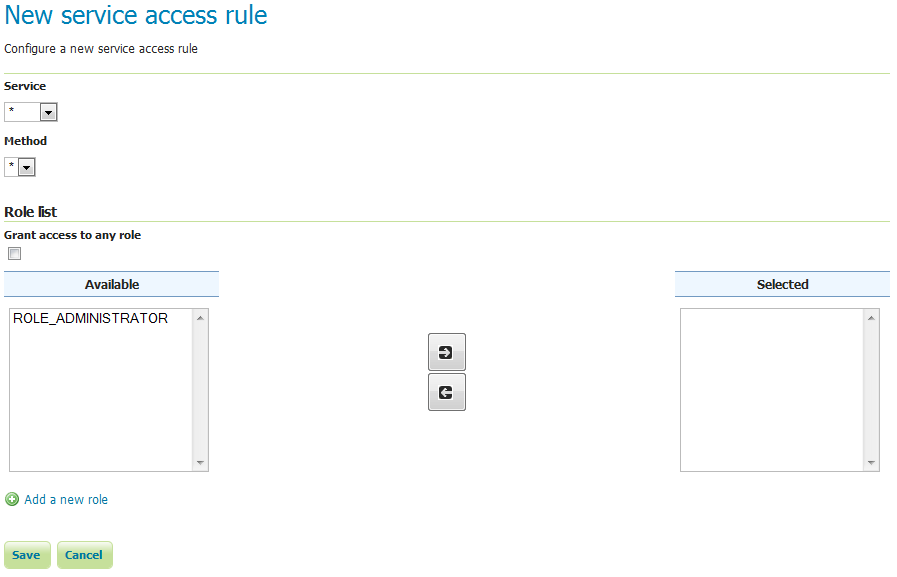

Services¶
This section provides access to the settings for Service Security. GeoServer can limit access based on OWS services (WFS, WMS, etc.) and their specific operations (GetCapabilities, GetMap, and so on).
By default, no service-based security is in effect in GeoServer. However rules can be added, removed, or edited here.

Service access rules list
Clicking the Add a new rule link will create a new rule.

New service rule
| Option | Description |
|---|---|
| Service | Sets the OWS service for this rule. Options are *, meaning all services, wcs, wfs, or wms. |
| Method | Sets the specific operation for this rule. Options depend on the Service, but include *, meaning all operations, as well as every service operation known to GeoServer, such as Capabilities, Transaction, GetMap, and more. |
| Grant access to any role | If selected, the rule will apply to all roles (no need to specify which ones) |
| Role list | Full list of roles, including a list of roles to which the rule is associated. Association can be switched here via the arrow buttons. This option is not applied if Grant access to any role is checked. |
| Add a new role | Shortcut to adding a new role |